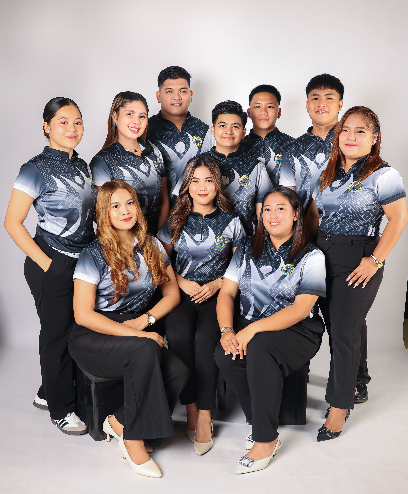
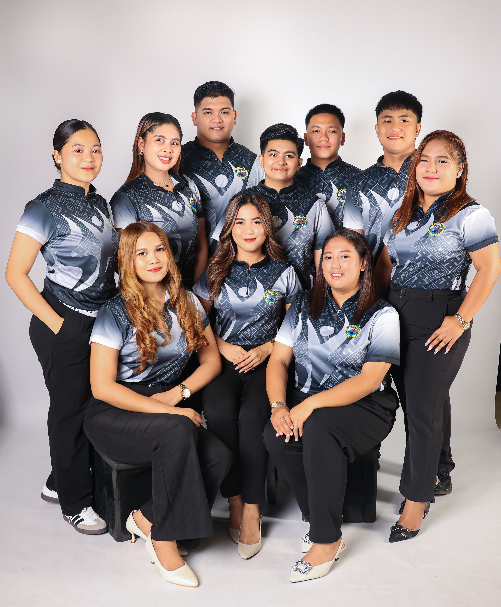
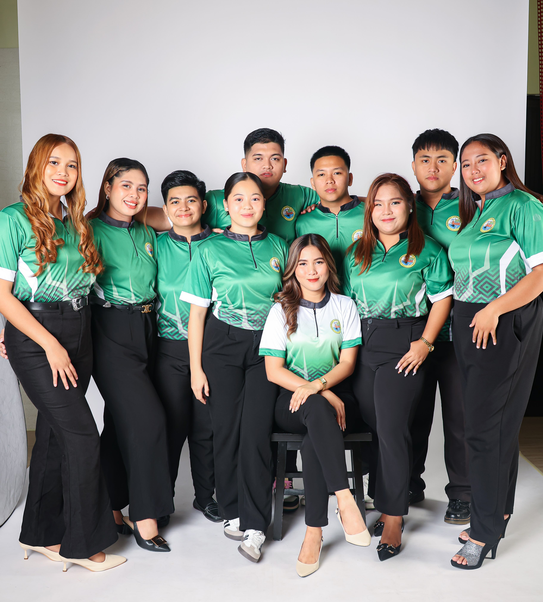
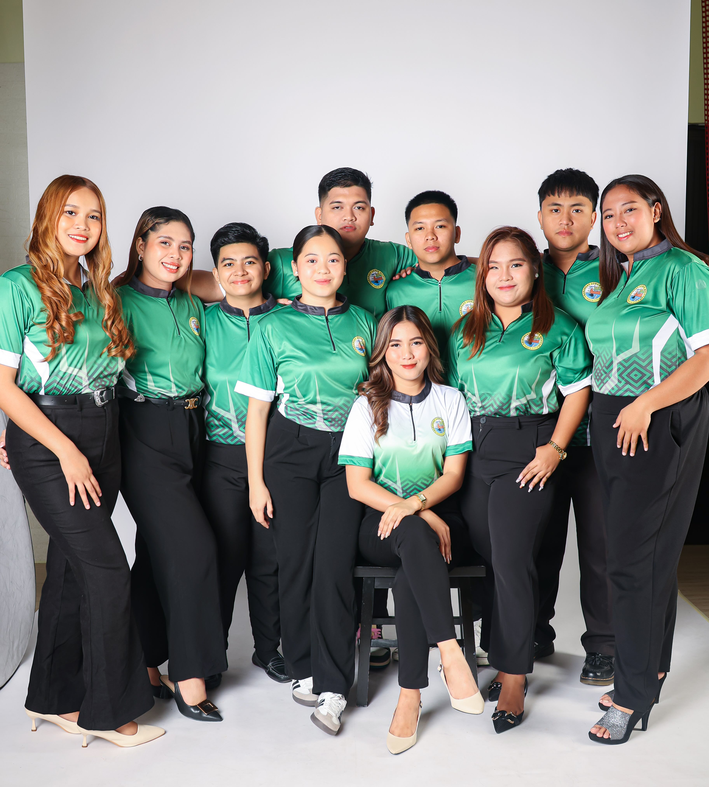

Projects
Discover our youth-led initiatives and community efforts.
Events
Stay up-to-date with upcoming events and activities.
Budget Transparency
Review budget allocations and financial transparency.
ADMINS
June Lyn Tabanao
SK CHAIRWOMAN / MANAGER
SKK MAC
ADMIN
SKS Tonton
ADMIN
SKK Chester
ADMIN

SKK Jam
ADMIN

SKK AJ
ADMIN

SKK Noime
ADMIN

SKK Summer
ADMIN

SKK Iris
ADMIN

SKT Karen
ADMIN
About Us
Task Force Youth Council of Barangay Lower Bicutan, Taguig was created/formed by Kagawad Camille Joy Adriano to empower the potentials of the youth and also to give different projects to the youths of barangay.
It was March 2014, TFYC was created. Various projects and seminars conducted by the team, including the annual Summer League for Basketball and Volleyball.
2017, the TFYC was handled by Kagawad Ricardo "Goma" Cruz IV which is also the head of the Youth Development of the Barangay.
2018, the Sangguniang Kabataan Lower Bicutan is under the supervision of SK Chairman Denn Michael “Dingdong” Bahan together with 7 SK Councilors, 1 SK Secretary, and 1 SK Treasurer.
In the current year 2023, the Sangguniang Kabataan Lower Bicutan is now under the supervision of SK Chairwoman June Lyn A. Tabanao together with the team LYNkod Kabataan consisting of 7 SK Councilors, 1 SK Secretary, and 1 SK Treasurer for the year 2023–2025.
 

 

Vision
Mission
Goals
Equip young individuals with leadership skills, values, and opportunities to become proactive contributors to their community.
Ensure that all projects and activities are carried out with integrity, transparency, and openness to public scrutiny.
Create programs that encourage youth participation in cultural, educational, environmental, and sports initiatives that benefit the whole barangay.
Address the physical, mental, emotional, and social needs of the youth through comprehensive and inclusive programs.